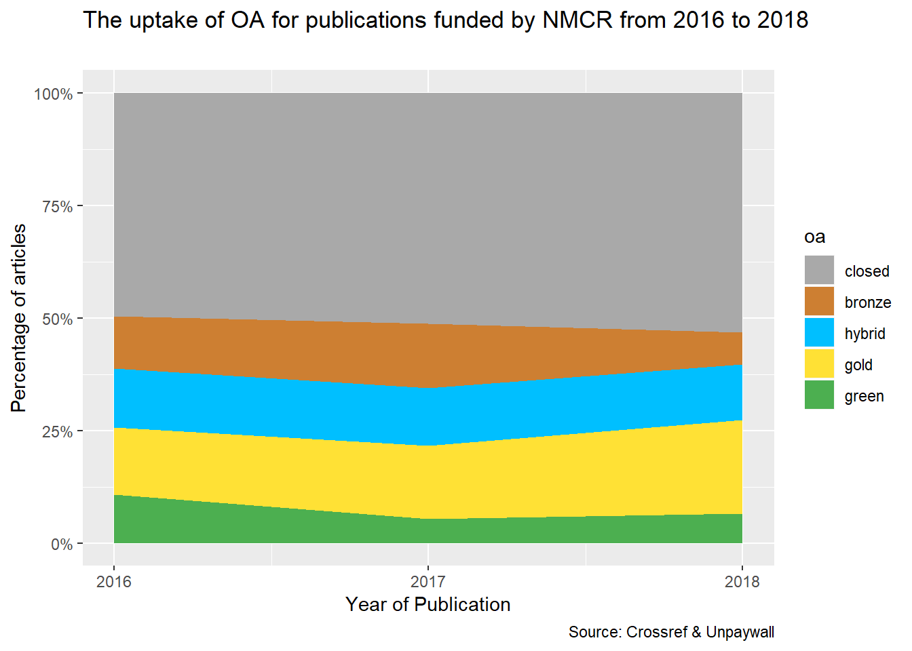
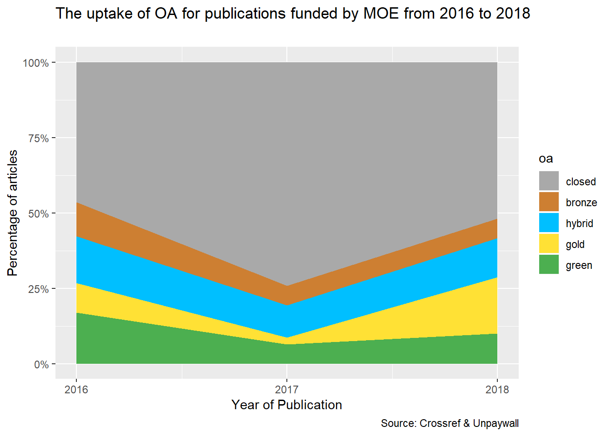

Two funding agencies in Singapore, Ministry of Education (MOE) and National Medical Research Council (NMRC), have required researchers to make publications resulting from research funded by them to be made publicly available 12 months after publication.
This report explores the OA status of publications funded by MOE and NMRC over the period of 2016 to 2018.
The following OA classification will be used in determining the OA status:
Closed: No free copy
Bronze: Journal is closed, article is free on publisher page, with no license
Hybrid: Journal is closed, article is free on publisher page under some kind of open license
Gold: Journal is open
Green: Free-to-read on repository
Crossref through their Funder Registry (https://www.crossref.org/services/funder-registry/) provides identifiers similar to DOI for funding agencies. Based on this registry, publishers who are member of Crossref can tag funding agencies acknowledged in publications by researchers.
Unpaywall (https://unpaywall.org/) maintains a database of links to full-text articles from open-access sources all over the world. Hence through this database, users can determine the OA status of a publication based on a DOI.
knitr::opts_chunk$set(echo = FALSE,
warning = FALSE,
message = FALSE)
library(kableExtra)
library(rcrossref)
library(jsonlite)
library(data.table)
library(purrr)
library(tidyverse)
library(roadoi)The list of publications (or DOIs) associated with a specific funder can be accessed via Crossref API. First, find the funder identifier from Crossref Funder Registry. For example, NMRC’s identifier is 10.13039/501100001349.
#find the total number of publications
nmrc_count <- cr_funders_(dois='10.13039/501100001349') %>%
fromJSON(flatten=FALSE) %>%
pluck("message", "descendant-work-count")
#it will query 1000 works each time to retrieve all the works
nmrc_works <- cr_funders(dois='10.13039/501100001349', works = TRUE,cursor = "*",
cursor_max = nmrc_count, limit = 1000,
filter = c(from_pub_date='2016-01-01')) %>%
pluck("data")
nmrc_joined <- nmrc_works %>%
select(c(container.title,published.print, doi, issn,publisher,type))
#unnest the authors field to combine them
nmrc_auth <- nmrc_works %>%
filter(!map_lgl(author, is.null)) %>%
unnest(author, .drop = TRUE) %>%
unite(author, c(family, given), sep = " ", remove = FALSE) %>%
group_by(doi) %>%
filter(!is.na(given)) %>%
summarise(all_authors=paste(author, collapse=" ; "))
nmrc_comb <- left_join(x=nmrc_joined, y=nmrc_auth, by="doi")
#unnest the funders field
nmrc_fund <- nmrc_works %>%
filter(!map_lgl(funder, is.null)) %>%
unnest(funder, .drop = TRUE) %>%
group_by(doi) %>%
filter(!is.na(name)) %>%
summarise(all_funders=paste(name, collapse=" ; "))
nmrc_comb2 <- left_join(x=nmrc_comb, y=nmrc_fund, by="doi") %>%
mutate(query="NMRC")| container.title | published.print | doi | issn | publisher | type | all_authors | all_funders | query |
|---|---|---|---|---|---|---|---|---|
| Clinical Neurophysiology | 2016-02 | 10.1016/j.clinph.2015.06.030 | 1388-2457 | Elsevier BV | journal-article | Razali Siti Nur Omaira ; Arumugam Thaarani ; Yuki Nobuhiro ; Rozalli Faizatul Izza ; Goh Khean-Jin ; Shahrizaila Nortina | Universiti Malaya ; National Medical Research Council | NMRC |
| Clinical Neurophysiology | 2016-02 | 10.1016/j.clinph.2015.11.011 | 1388-2457 | Elsevier BV | journal-article | Chan Yee-Cheun ; Therimadasamy Aravind-Kannan ; Sainuddin Nurul M. ; Wilder-Smith Einar ; Yuki Nobuhiro | National Medical Research Council | NMRC |
| Cancer Science | 2016-02 | 10.1111/cas.12856 | 1347-9032 | Wiley | journal-article | Syn Nicholas Li-Xun ; Wang Lingzhi ; Wong Andrea Li-Ann ; Soe Mu-Yar ; Chuah Benjamin ; Chan Daniel ; Tan Sing-Huang ; Soo Ross Andrew ; Lee Soo-Chin ; Goh Boon-Cher ; Yong Wei-Peng | National Medical Research Council | NMRC |
| Cell Proliferation | 2016-02 | 10.1111/cpr.12228 | 0960-7722 | Wiley | journal-article | Kongpetch S. ; Puapairoj A. ; Ong C. K. ; Senggunprai L. ; Prawan A. ; Kukongviriyapan U. ; Chan-On W. ; Siew E. Y. ; Khuntikeo N. ; Teh B. T. ; Kukongviriyapan V. | National Medical Research Council ; Thailand Research Fund ; Khon Kaen University ; Royal Golden Jubilee Ph.D. Programme | NMRC |
| Applied Physics Letters | 2016-01-18 | 10.1063/1.4939923 | 0003-6951,1077-3118 | AIP Publishing | journal-article | Wang Zi ; Zheng Wei ; Hsu Chin-Ying Stephen ; Huang Zhiwei | National Medical Research Council | NMRC |
Repeat the above steps for MOE, and subsequently, combined the data frame together.
combined <- bind_rows(nmrc_comb2,moe_comb2)Please change the email to your own email address.
up_data <- map(combined$doi, .f = safely(function(x) oadoi_fetch(x,
email =your_own_email)))
up_data2 <- purrr::map_df(up_data, "result")
##getting values from best_oa_location
best_oa_evidence <- up_data2 %>%
mutate(evidences = map(best_oa_location, "evidence") %>%
map_if(is_empty, ~ NA_character_) %>%
flatten_chr())%>%
.$evidences
best_oa_host <- up_data2 %>%
mutate(hosts = map(best_oa_location, "host_type") %>%
map_if(is_empty, ~ NA_character_) %>%
flatten_chr())%>%
.$hosts
best_oa_license <- up_data2 %>%
mutate(licenses = map(best_oa_location, "license") %>%
map_if(is_empty, ~ NA_character_) %>%
flatten_chr())%>%
.$licenses
best_oa_url <- up_data2 %>%
mutate(urls = map(best_oa_location, "url") %>%
map_if(is_empty, ~ NA_character_) %>%
flatten_chr())%>%
.$urls
best_oa_url_for_pdf <- up_data2 %>%
mutate(pdfs = map(best_oa_location, "url_for_pdf") %>%
map_if(is_empty, ~ NA_character_) %>%
flatten_chr())%>%
.$pdfs
best_oa_version <- up_data2 %>%
mutate(versions = map(best_oa_location, "version") %>%
map_if(is_empty, ~ NA_character_) %>%
flatten_chr())%>%
.$versions
#selecting specific columns from the results
up_selection <- up_data2 %>% select(1, 4:13)
##merging the columns together
up_final <- add_column(up_selection, best_oa_evidence, best_oa_host, best_oa_license,best_oa_url,best_oa_url_for_pdf,best_oa_version)
up_final$year1 <- as.numeric(as.character(up_final$year))
#oa classifications
up_final1 <- up_final %>%
mutate(oa = case_when((journal_is_oa == FALSE & is_oa == FALSE) ~ "closed",
(best_oa_host == "publisher" & is.na(best_oa_license) == TRUE & is_oa == TRUE &
journal_is_oa == FALSE) ~ "bronze",
(best_oa_host == "publisher" & is.na(best_oa_license) != TRUE & is_oa == TRUE &
journal_is_oa == FALSE) ~ "hybrid",
(best_oa_host == "publisher" & is_oa == TRUE & journal_is_oa == TRUE)
~ "gold",
(best_oa_host == "repository" & is_oa == TRUE & journal_is_oa == FALSE)
~ "green"))Let’s now combine all the data from Crossref and Unpaywall.
up_final2 <- up_final1 %>%
select(c(doi,oa,year1))
comb_all <- left_join(combined, up_final2, by="doi") %>%
filter(type == "journal-article") %>%
drop_na()| oa | n | percent |
|---|---|---|
| closed | 762 | 52.2 |
| gold | 287 | 19.6 |
| hybrid | 185 | 12.7 |
| bronze | 134 | 9.2 |
| green | 93 | 6.4 |

Following is the breakdown of OA status of publications funded by MOE.
| oa | n | percent |
|---|---|---|
| closed | 213 | 57.0 |
| gold | 52 | 13.9 |
| hybrid | 43 | 11.5 |
| green | 37 | 9.9 |
| bronze | 29 | 7.8 |
